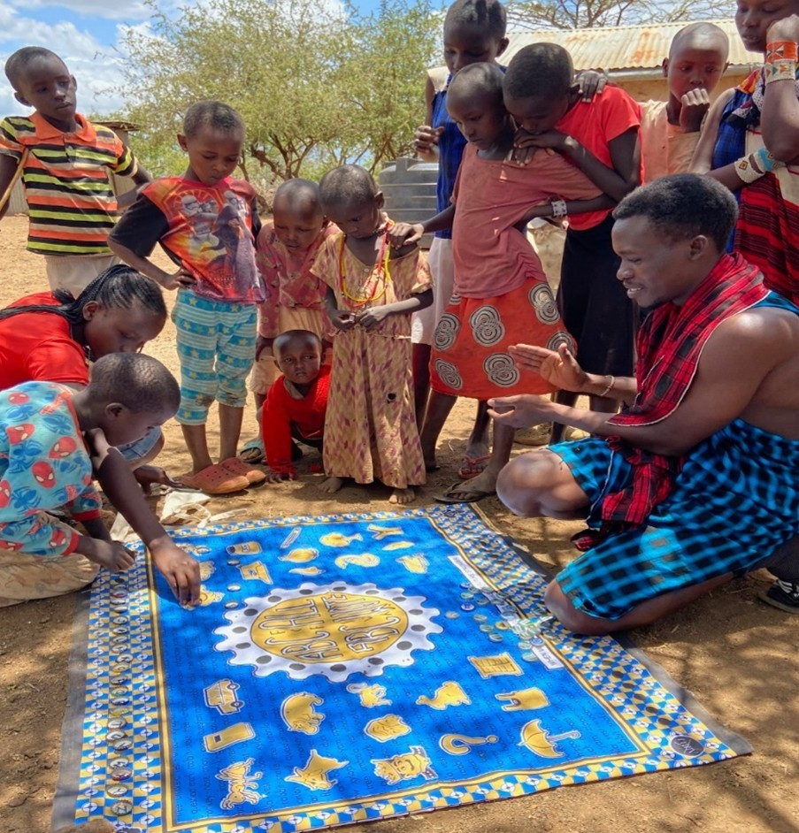
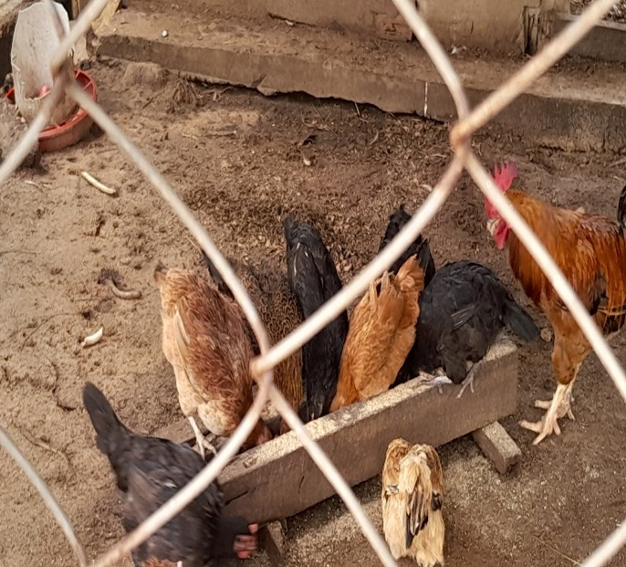
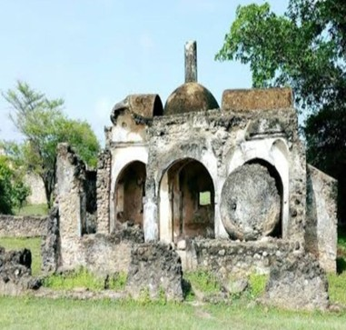
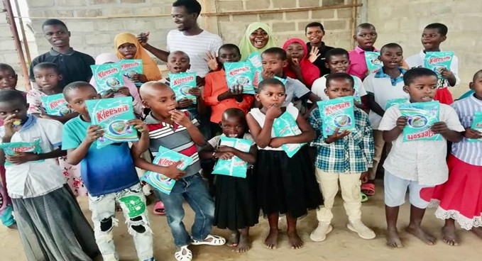
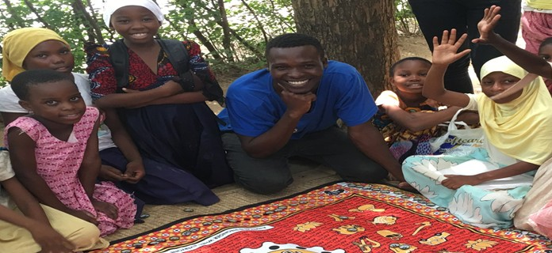

Our Impact in Action
Visual stories of education, empowerment, and sustainable development.

Free learning sessions empowering youth and adults.

Community dialogues and leadership engagement.

Hands-on poultry farming demonstration training.

Local and international volunteers working together.

Sports and arts empowering youth and children.